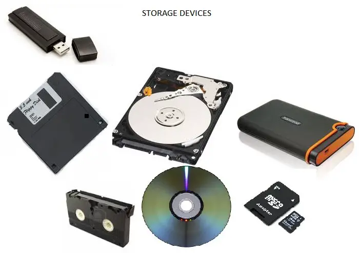

보조기억장치란 주기억장치의 단점을 보완하기 위해 만들어진 기억장치입니다. 주기억장치는 전원이 꺼지면 데이터가 사라지고, 용량이 작고, 가격이 비싸기 때문에 영구적으로 많은 데이터를 저장하기 어렵습니다. 보조기억장치는 전원이 꺼져도 데이터가 유지되고, 용량이 크고, 가격이 저렴하기 때문에 대용량의 데이터를 보관하는데 적합합니다. 하지만 보조기억장치는 주기억장치보다 속도가 느리고, 중앙처리장치와 직접 자료 교환이 불가능하기 때문에 주기억장치와 함께 사용됩니다.
보조기억장치의 종류에는 자기테이프, 자기디스크, 광디스크, 플래시 메모리 등이 있습니다. 이들은 각각 다음과 같은 특징을 가지고 있습니다.
자성물질이 코팅된 플라스틱 테이프에 데이터를 기록하는 방식입니다. 용량이 크고 가격이 저렴하지만, 순차적으로만 접근할 수 있고, 평균 처리 시간이 길어 백업용으로 주로 사용됩니다.
자성물질이 코팅된 금속 원판에 데이터를 기록하는 방식입니다. 용량이 크고 접근 속도가 빠르며, 순차적이든 비순차적이든 상관없이 접근할 수 있습니다. 개인용 컴퓨터에는 디스켓이나 하드디스크 형태로 많이 사용됩니다.
원통형의 자성물질에 데이터를 기록하는 방식입니다. 당시에는 자기디스크보다 속도가 빨라 주 기억 장치로 사용되기도 했지만, 현재는 사용되지 않습니다.
레이저 광선을 이용하여 데이터를 기록하는 방식입니다. 자기디스크보다 용량이 크고 내구성이 좋으며, 읽기 전용과 읽기/쓰기 가능한 종류가 있습니다. CD-ROM, DVD-ROM, Blu-ray 등이 이에 해당합니다.
전자 회로를 이용하여 데이터를 기록하는 방식입니다. 전원이 꺼져도 데이터가 유지되고, 충격에 강하며, 작고 가벼워 휴대성이 좋습니다. USB 메모리 스틱, 메모리 카드, SSD 등이 이에 해당합니다.
최근에 사용되는 보조기억장치는 SSD, 플래시 메모리, 마그네틱 테이프 등이 있습니다. 이들은 각각 다음과 같은 장단점을 가지고 있습니다.
|  |